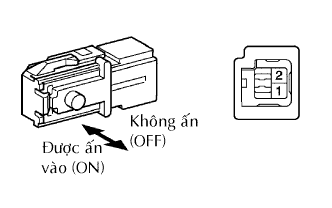
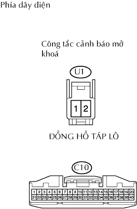
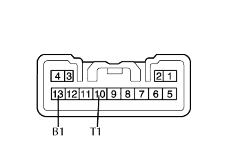
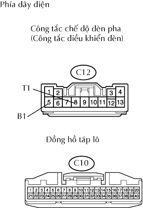
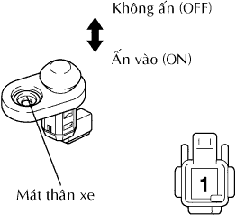
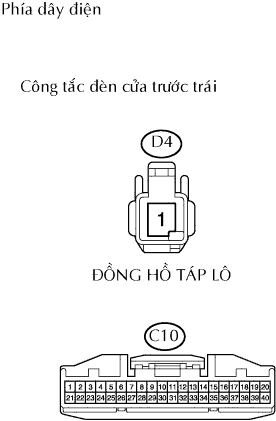

HỆ THỐNG ĐỒNG HỒ ĐO/ĐỒNG HỒ BÁO > Còi báo không kêu |
| 1.KIỂM TRA CẦU CHÌ (TAIL) |
Tháo cầu chì TAIL ra khỏi hộp rơle và cầu chì phía người lái.
Đo điện trở của cầu chì.
|
| ||||
| OK | |
| 2.KIỂM TRA CỤM ĐỒNG HỒ TÁP LÔ (HOẠT ĐỘNG CỦA CHUÔNG BÁO) |
Kiểm tra hoạt động chuông báo nhắc nhở chìa khoá.
Tắt khoá điện về vị trí OFF nhưng khoá điện vẫn nằm trong ổ khoá điện.
Mở cửa người lái
Kiểm tra hoạt động chuông báo nhắc nhở đèn.
Tắt khóa điện OFF.
Đặt công tắc điều khiển đèn đến vị trí TAIL hay HEAD.
Mở cửa người lái
| Kết quả | Đi đến |
| Chuông báo nhắc nhở chìa khoá không kêu. | A |
| Chuông báo nhắc nhở đèn không kêu. | B |
|
| ||||
| A | |
| 3.KIỂM TRA CỤM CÔNG TẮC CẢNH BÁO MỞ KHOÁ |
|  |
Tháo công tắc cảnh báo mở khoá.
Đo điện trở của công tắc.
| Nối dụng cụ đo | Điều kiện | Điều kiện tiêu chuẩn |
| 1 - 2 | Ấn (ON) | Dưới 1 Ω |
| Không ấn (OFF) | 10 kΩ trở lên |
|
| ||||
| OK | |
| 4.KIỂM TRA DÂY ĐIỆN (CÔNG TẮC CẢNH BÁO MỞ KHOÁ - ĐỒNG HỒ TÁP LÔ VÀ MÁT THÂN XE) |
|  |
Ngắt giắc U1 của công tắc.
Ngắt giắc C10 của đồng hồ.
Đo điện trở của các giắc nối phía dây điện.
| Nối dụng cụ đo | Điều kiện tiêu chuẩn |
| U1-1 - C10-10 | Dưới 1 Ω |
| U1-2 - Mát thân xe |
|
| ||||
| NG | ||
| ||
| 5.KIỂM TRA CỤM CÔNG TẮC CHẾ ĐỘ ĐÈN PHA (CÔNG TẮC ĐIỀU KHIỂN ĐÈN) |
|  |
Tháo công tắc chế độ đèn pha
Đo điện trở của công tắc.
| Nối dụng cụ đo | Tình trạng công tắc | Điều kiện tiêu chuẩn |
| 13 (B1) - 10 (T1) | HEAD | Dưới 1 Ω |
| TAIL | ||
| OFF | 10 kΩ trở lên |
|
| ||||
| OK | |
| 6.KIỂM TRA DÂY ĐIỆN (CÔNG TẮC CHẾ ĐỘ ĐÈN PHA - ĐỒNG HỒ VÀ ẮC QUY) |
|  |
Ngắt giắc nối C12 của công tắc.
Ngắt giắc C10 của đồng hồ.
Đo điện áp của các giắc nối phía dây điện.
| Nối dụng cụ đo | Điều kiện tiêu chuẩn |
| C12-13 (B1) - Mát thân xe | 10 đến 14 V |
Đo điện trở của các giắc nối phía dây điện.
| Nối dụng cụ đo | Điều kiện tiêu chuẩn |
| C12-10 (T1) - C10-8 | Dưới 1 Ω |
|
| ||||
| OK | |
| 7.KIỂM TRA CỤM CÔNG TẮC ĐÈN CỬA TRƯỚC TRÁI |
|  |
Tháo công tắc đèn cửa.
Đo điện trở của công tắc.
| Nối dụng cụ đo | Tình trạng công tắc | Điều kiện tiêu chuẩn |
| 1 - Mát thân xe | Không ấn (OFF) | Dưới 1 Ω |
| Ấn (ON) | 10 kΩ trở lên |
|
| ||||
| OK | |
| 8.KIỂM TRA DÂY ĐIỆN (CÔNG TẮC ĐÈN CỬA - ĐỒNG HỒ) |
|  |
Ngắt giắc nối D4 của công tắc.
Ngắt giắc C10 của đồng hồ.
Đo điện trở của các giắc nối phía dây điện.
| Nối dụng cụ đo | Điều kiện tiêu chuẩn |
| D4-1 - C10-16 | Dưới 1 Ω |
|
| ||||
| OK | ||
| ||